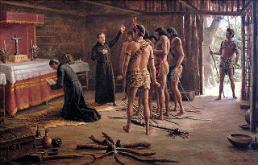
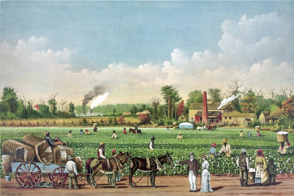

Brasil no período Colonial
O Brasil foi "descoberto" em 1500 por Pedro Álvares Cabral, contudo, a expedição que proporcionou aos portugueses chegarem a Terra de Vera Cruz ocorreu devido a eventos precedentes que são de suma importancia para compreendermos o contexto histórico no qual isso ocorreu. A síntese que aborda tais eventos segue adiante:
Período Pré-Colonial do Brasil (1500 - 1530)
-
Exploração do Pau Brasil para utilizar a seiva vermelha para colorir as vestes reais
portuguesas
-
Trabalho indígena de forma “amigável” em troca de utensílios (escambo)
-
Nesse primeiro momento não havia interesse em escravizar os índios
-
Catequização dos índios

Brasil Colônia (1530 - 1815)
A crise do comércio das especiarias orientais, em meados do século XVI, e as várias tentativas de invasão empreendidas por franceses, ingleses e holandeses fizeram com que a Coroa portuguesa confirmasse a sua posse sobre as terras brasileiras
Capitanias hereditárias - 1534
As capitanias hereditárias foram a primeira forma de se administrar o Brasil por parte de Portugal. Eram faixas litorâneas que seriam divididas para os sesmeiros nomeados pelo rei, cujas funções seriam fiscalizar a cobrança de impostos, verificar a viabilidade econômica da capitania, fazer cumprir as ordens reais e evitar invasões piratas e indígenas O sistema de capitanias hereditárias, de um modo geral, fracassou. Na maioria dos casos, a falta de recursos financeiros para a exploração lucrativa justifica o insucesso
Governo- Geral - 1548
Reafirmação da autoridade e soberania da Coroa sobre a colônia, e definia os encargos e direitos dos governadores-gerais do Estado português que assumiam a tarefa de colonização, sem extinguir o sistema de capitanias hereditárias
União Ibérica – 1580 à 1640
Domínio espanhol sob Portugal, as colônias portuguesas ficaram sob a autoridade da Espanha. Suspensão temporária dos limites impostos pelo Tratado de Tordesilhas, contribuindo para a chamada expansão territorial; invasão holandesa no Brasil
Restauração - 1640
Movimento lusitano pela restauração da autonomia do reino de Portugal, liderado pelo duque de Bragança. O domínio espanhol arruinou os cofres portugueses e levou Portugal a perder importantes áreas coloniais. D. João IV intensifica a exploração colonial
Escravidão no Brasil Colonial
-
Primeiro houve a tentativa de escravização indígena durante a colonização, porém, os
índios eram defendidos pelos padres jesuítas que tinham intensão de catequizar os
indígenas, além disso, tinham conhecimento do território o que tornava difícil sua captura
-
Em 1570 surge a primeira proibição de escravidão indígena através da Carta Régia que
dizia que indígenas só poderiam ser escravizados se fosse em caso de “guerra justa”, ou
seja, se mostrassem hostilidade aos colonizadores primeiro
-
A escravidão africana mostrou-se lucrativa e mais vantajosa do que a indígena e com o
tempo essa foi deixada de lado devido a dificuldade de captura dos índios e a interferência
dos jesuítas
-
Os escravizados africanos eram trazidos para o Brasil por meio do tráfico negreiro. Esse
comércio de compra deles se iniciou no século XV, quando os portugueses começaram a
ter contato com diferentes povos africanos. Esse contato, naturalmente, estabeleceu-se em
vias comerciais, e uma das mercadorias incluídas nos negócios eram esses trabalhadores
Economia Agropastoril (dois primeiros séculos de colonização)
Plantation: desenvolvido no Nordeste, era o cultivo de grandes latifúndios monocultores, como o da cana-de-açúcar. A razão para o agropastoril vinha do fato de que, ao contrário dos espanhóis, que encontraram com maior facilidade outras fontes de riqueza, como metais preciosos, em suas colônias americanas, no Brasil, a obtenção de lucros com pedras e metais precisos só ocorreu no século XVIII, através do desbravamento no interior do território
Economia Mineradora
-
Entradas e bandeiras: consistiam em expedições armadas que saíam da Capitania de
São Paulo rumo ao sertão, com o objetivo de apresar índios, destruir quilombos e
encontrar metais preciosos.
-
No ano de 1696, uma dessas expedições conseguiu encontrar jazidas de ouro nas regiões
montanhosas de Minas Gerais, onde teve início a ocupação do Vale do Ouro Preto
-
A exploração do ouro em Minas desencadeou uma grande onda migratória de portugueses
e de pessoas de outras regiões da colônia à procura de enriquecimento
-
Devido a isso, foi criado um novo sistema de fiscalização e cobrança, desenvolvido pela
Coroa Portuguesa especialmente para a atividade mineradora. Esse regimento criou a
Intendência das Minas, um tipo de governo especial vinculado diretamente a Lisboa
-
Quinto – 20% de toda a produção do ouro pertencia ao rei de Portugal; A título de
curiosidade vem daí a expressão “O quinto dos infernos”
-
Derrama – Uma meta de aproximadamente 1.500 kg de ouro por ano deveria ser atingida
pela colônia. Se isso não acontecesse, penhoravam-se os bens dos senhores de lavras;
-
Capitação – Imposto pago pelo senhor de lavras por cada escravo que trabalhava em
seus lotes.
Conflitos importantes:
-
Inconfidência Mineira (1789): também conhecida como Conjuração Mineira, foi um
movimento separatista que aconteceu em Minas Gerais. O principal objetivo era obter a
independência de Minas em relação a Portugal. Joaquim José da Silva Xavier foi o líder do
movimento da Inconfidência Mineira e foi chamado de “Tiradentes” porque exercia a
profissão de dentista naquela época, apesar de não ter estudado regularmente. O grupo de
inconfidentes foi descoberto através da delação de três participantes. Após quase quatro
anos de processo, todos os integrantes do grupo de inconfidentes foram perdoados ou
condenados ao degredo. Somente Tiradentes foi condenado à morte e executado no
dia 21 de abril de 1792, no campo de São Domingos, no Rio de Janeiro. Após o
cumprimento da sentença, o corpo foi esquartejado e ficou exposto e as partes foram
expostas em postes na estrada que ligava o Rio de Janeiro a Vila Rica
-
Guerra dos emboabas (1707-1709): os paulistas foram os responsáveis pela descoberta
da região das minas e, por esse motivo, reivindicaram a exclusividade nas atividades
extrativistas. Do outro lado da guerra estavam os emboabas, compostos principalmente
por portugueses e imigrantes de outros territórios da colônia que desafiaram a autoridade
dos bandeirantes paulistas. Durante os dois anos de guerra houveram muitos ataques
entre os dois grupos e em 1709, houve a intervenção dos portugueses e do governador do
Rio de Janeiro, encerrando a Guerra dos Emboabas de vez